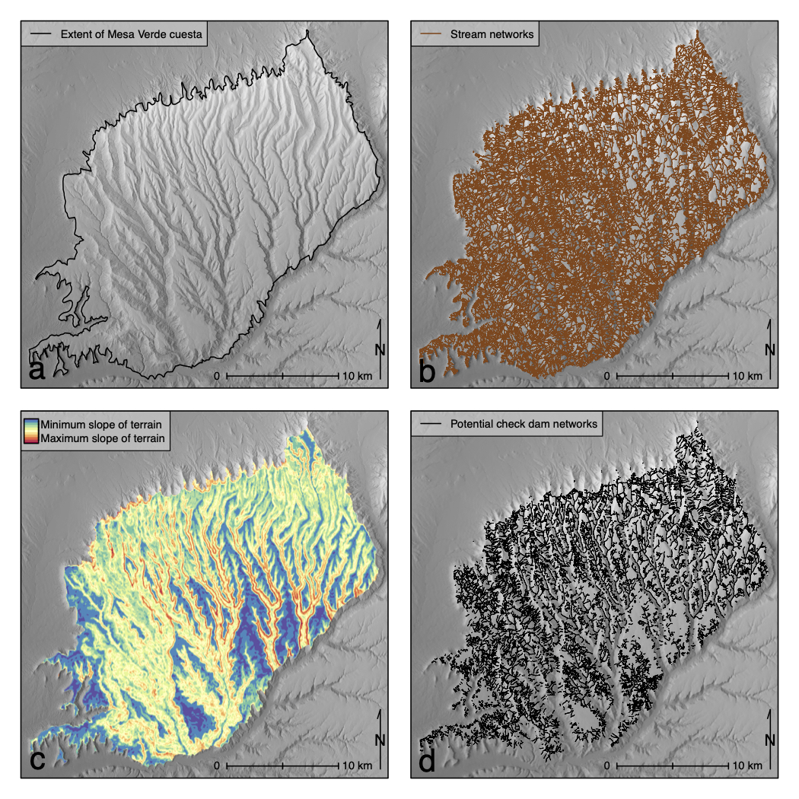

projects
Deep Learning Artificial Neural Networks for Non-destructive Archaeological Site Dating
Journal of Archaeological Science

This article introduces artificial neural networks as a computational tool to utilize legacy archaeological data for precisely and accurately estimating dates of residential site occupation. The implementation of this deep learning algorithm can provide high-resolution demographic reconstructions of a study area from non-collection, non-invasive, and non-destructive data collection methods that only record frequencies of artifact types on the contemporary ground surface. The utility of this deep learning algorithm is presented through an example from the central Mesa Verde region in the northern US Southwest. Results show a properly trained artificial neural network predicts annual residential occupation with an average 92.8% accuracy from AD 450–1300. An annual demographic reconstruction of the central Mesa Verde region using occupation predictions from the artificial neural network is also presented.
Check Dam Agriculture on the Mesa Verde Cuesta
Journal of Archaeological Science: Reports

Prehistoric water management in the northern US Southwest was integral to successful subsistence. On the Mesa Verde cuesta in southwestern Colorado, several types of water management features have been identified in the archaeological record, but research into these features has typically focused on the efficacy of reservoirs—a large-scale, labor-intensive, and community-oriented means of collecting and storing water. This focus on large-scale water management features has largely ignored the productive potential of small-scale and low-cost strategies for water management executed by individual households. There is considerable evidence, for example, that extensive check dam networks were constructed and used on the Mesa Verde cuesta, but their actual utility as a small-scale risk-aversion strategy to resource stress has not systematically been explored. This paper identifies all ephemeral drainages on the Mesa Verde cuesta where check dam construction was possible, then applies a maize growing niche model to estimate total yields from check dam farming plots for each year from AD 890–1285. A demographic reconstruction is then used to estimate the percentage of the total cuesta population that could have been supported using only check dam maize yields through time. Results suggest that check dam farming could have supplied a reliable source of surplus annual maize sufficient for household storage needs even during the most populous time periods across the cuesta landscape.
Dynamic Communities on the Mesa Verde Cuesta
American Antiquity

This paper systematically and quantitatively characterizes interaction dynamics and community formation based on changes in spatial patterns of contemporaneous households. We develop and apply a geo-spatial routine to measure changing extents of household interaction and community formation from A.D. 600–1280 on the Mesa Verde cuesta in southwestern Colorado. Results suggest that household spatial organization was shaped simultaneously by the maintenance of regular social interaction that sustained communities, and the need for physical space among households. Between A.D. 600 and 1200, households balanced these factors by forming an increased number of dispersed communities in response to increases in population and variable environmental stressors. However, as population rebounded after the mid-1100s megadrought, communities became increasingly compact, disrupting a long-standing equilibrium between household interaction and subsistence space within each community. The vulnerabilities this change in community spatial organization created were compounded by a cooler climate, drought, violence, and changes in political and ritual organization in the mid-A.D. 1200s, which ultimately culminated in the complete depopulation of the Mesa Verde cuesta by the end of the thirteenth century.